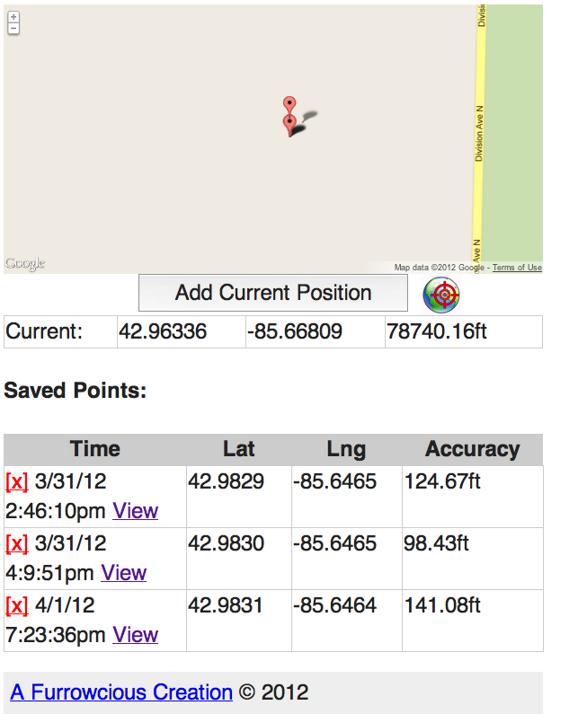

Playing with navigator.geolocation, gmaps, and localstorage
Just a pet project to get more familiar with HTML5; particularly the navigator.geolocation object, and local storage with a dash of offline app caching.
Well, if you are so bold and are willing to give it a try and suffer the consequences of this early-build, just download the app, and open the index.html file. Should be it, really. Then start dropping points, refreshing the page, and be mystified.
I don't know yet. I want to clean it up a lot more, and get it into a more "final" stage so I can reuse it as a library elsewhere. That's the goal anyway.
